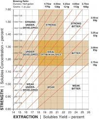

Es un factor importante para asegurar una
extracción correcta.
Según la SCA se debe moler 6.9 gramos de
café por cada 100 mililitros de agua, pero
para no complicarnos con los decimales
redondeamos a 7 gramos por cada 100
mililitros.
Debemos tener en cuenta que por cada
gramo de café perdemos 2 mililitros de agua
por lo que hay que considerar una
compensación a la hora de preparar nuestra
bebida.

CUANDO APRENDES A TOMAR Y PREPARAR CAFÉ NO SOLO MEJORAS TU DIA TAMBIÉN MEJORAS TU SALUD.